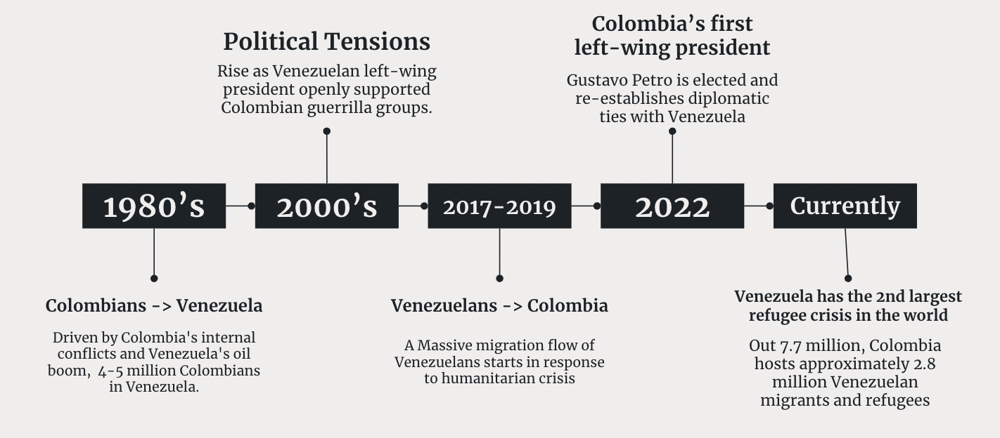

#terms(lda_model, 20)Venezuela-Colombia Relations through the News: A Topic Modeling Analysis
Introduction
This project is inspired by the intricate historical and ongoing dynamics of Venezuela-Colombia relations, particularly in the context of migration, political tensions, and economic challenges.This relationship has been shaped by significant historical events that have deeply influenced migration patterns, political tensions, and economic ties. To better illustrate this, we draw a broad timeline to highlight some of the main events:

This dynamic history of migration, political conflict, and economic instability inspired our project, which aims to examine how these factors, and more specifically migration, continue to shape the relationship between the two countries.
By focusing on a large corpus of news articles from Colombian newspapers like El Tiempo and El Espectador, the project seeks to computationally analyze how these factors have manifested in media narratives over time. The use of topic modeling, specifically Latent Dirichlet Allocation (LDA), will allow us to identify and track the key themes that have shaped the discourse around Venezuela and Colombia, providing insights into how political events, economic crises, and migration trends have influenced public perception and bilateral relations. Through this analysis, the project aims to uncover the evolving nature of their relationship and explore the role of media in framing these complex dynamics.
Research Question:
What are the main themes discussed in Colombian newspapers about Venezuela-Colombia relations and how do they change in response to significant historical/political events?
Data Source:
The data for this analysis consists 5,061 news articles published by Colombian newspapers El Tiempo and El Espectador. El Tiempo is currently the most widely read newspaper in Colombia and has historically been right-leaning, while El Espectador, the country’s oldest newspaper, is known for its left-leaning stance.
We downloaded these articles from the Nexus Uni database under the keyword “Venezuela”, filtering for all articles published in years 2017, 2020 and 2023.
Methodolody
Data Collection and Pre-processing
- Data Extraction: Articles were extracted from PDF files using
pdftoolsand other relevant libraries to create a text extraction function. - Text Cleaning: Text was cleaned by removing stop words, punctuation, and special characters.
- Tokenization: Text was tokenized into individual words.
- Lemmatization: Words were lemmatized to their root forms using a Spanish lemmatizer.
- TF-IDF: To reduce noise from frequently occurring words that do not convey important information, we applied the TF-IDF statistic, which adjusts word importance by down-weighting common terms and emphasizing less frequent but significant ones. Thus,words with a TF-IDF score below 0.01 were removed from the corpus to improve topic coherence.
Topic Modeling
Document-Term Matrix (DTM): A Document-Term Matrix (DTM) was created to represent the occurrence of words in each document. The DTM is a matrix where rows represent documents and columns represent unique words from the corpus.
Optimal Number of Topics: We used model fitness scores to validate the optimal number of topics for LDA. Specifically, the
FindTopicNumber()function from theldatuningpackage was applied. Using a DTM, this function allows for the input of multiple values for the number of topics (k) and calculates four different model fitness scores simultaneously: Griffiths2004, Deveaud2014, CaoJuan2009, and Arun2010. The use of multiple fitness scores provided a comprehensive approach to determining the optimal number of topics for the LDA model.
Griffiths2004: Aims to identify coherence.
Deveaud2014: Reflects interpretability.
CaoJuan2009: Measures distinctiveness.
Arun2010: Analyzes topic separation.

Based on the fitness score analysis we decided on 6 topic as the optimal parameter our LDA model.
LDA Model: Latent Dirichlet Allocation (LDA) is a probabilistic model that uncovers hidden topics within a corpus by analyzing patterns of word co-occurrence.
Bayesian Inference:
LDA employs Bayesian statistics to infer the hidden structure of the text. It estimates the probability distributions of topics and words based on the observed documents.Generative Model:
LDA assumes that:- Each document is a mixture of multiple topics.
- Each topic is represented as a probability distribution over a set of words.
Using Bayesian inference, LDA works backward from the observed words to:
- Identify the most probable topics for each document.
- Determine the most representative words for each topic.
- Each document is a mixture of multiple topics.
Article Classification: Each newspaper article was categorized based on its topic-document affiliation, determined by Gamma Values derived from the LDA model.
Gamma Value:
Gamma values represent the degree of association between a document and each topic.Assignment Criteria:
- Each document was assigned to the topic with the highest gamma value.
- To ensure data quality and relevance, documents with ambiguous affiliations (i.e., gamma values below the average threshold) were excluded from the analysis.
- Each document was assigned to the topic with the highest gamma value.
Topic Interpretation and Refinement: After identifying the latent topics, in consultation with Prof. Busse-Cárdenas, additional analysis was performed to ensure that meaningful themes emerged from the model. The identified topics were interpreted by examining the most frequent words associated with each topic in the context of Venezuela-Colombia relations.
- Time-Series Analysis: To observe how the prominence of different topics evolved over time, a time-series analysis was conducted. This involved tracking the load of topics across different time periods, based on the frequency with which words associated with each topic appeared in the articles. Each document was assigned to the topic with the highest probability gamma value and the number and percentage of articles corresponding to each topic were tracked annually. This approach, similar to methods used by Roh and Yang (2019), helped identify shifts in public discourse and media representation over time, especially in relation to key political, economic, and migration-related events.
Results and Discussion
Topic Identification and Interpretation:
- Top Terms and Themes: The top terms for each topic were identified, providing insights into the underlying themes.
- Inter-Topic Distance: The relationships between topics were visualized using an inter-topic distance map.
Topic Evolution Over Time:
- Topic Distribution: The distribution of topics across different years was analyzed to identify trends and shifts.
- Time Series Analysis: Time series analysis was used to track the evolution of topics over time.
Document-Level Analysis:
- Topic Assignments: Documents were assigned to topics based on their content.
- Representative Documents: The most representative documents for each topic were identified and analyzed.
Comparative Analysis:
- Newspaper Comparison: The dominant topics in El Tiempo and El Espectador were compared to identify differences and similarities.
Conclusion
[Summarize the key findings and their implications. Discuss the limitations of the study and potential future research directions.]
Appendix (Optional)
- Code Snippets: Include relevant R code snippets for data cleaning, preprocessing, topic modeling, and visualization.
- Additional Visualizations: Provide additional visualizations, such as word clouds, bar charts, and network diagrams.
- Technical Details: Discuss specific implementation details, such as hyperparameter tuning and model evaluation metrics.